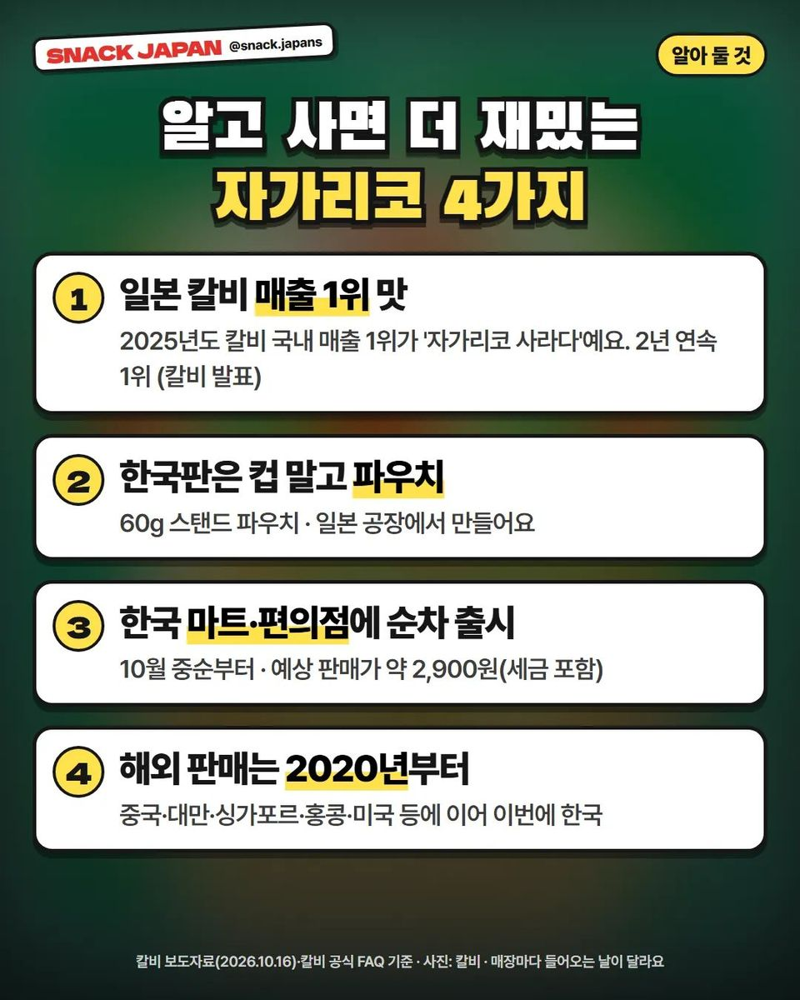
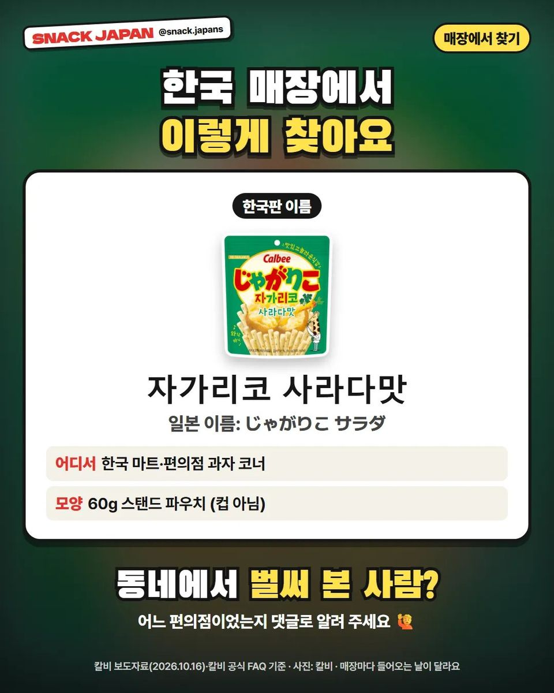

자가리코 한국 정식 출시, 칼비 자가리코 사라다맛 60g 파우치 정리
칼비 발표로는 10월 중순부터 한국 마트·편의점에 순차 출시. 일본에서 컵으로 사 오던 그 과자!
일본 가면 꼭 컵으로 사 오던 그 과자,
자가리코가 한국에 정식으로 나와요 🇰🇷
칼비 발표 내용을 하나씩 정리해 볼게요!

1. 알고 사면 더 재밌는 자가리코!
- 한국판 이름: '자가리코 사라다맛' 60g 스탠드 파우치
- 만드는 곳: 일본 공장
- 일본 칼비 국내 매출 1위가 '자가리코 사라다' (2025년도, 2년 연속 · 칼비 발표)
- 해외 판매는 2020년부터, 중국·대만·싱가포르·홍콩·미국 등에 이어 이번에 한국

2. 한국 매장에서 찾는 법!
- 출시: 10월 중순부터 한국 마트·편의점에 순차 출시 (칼비 발표)
- 찾는 법: 과자 코너에서 초록색 '자가리코 사라다맛' 파우치
- 참고: 매장마다 들어오는 날이 달라요
총평
일본에서 컵으로 사 오던 그 과자…
동네에서 벌써 보신 분 계세요? 🥔